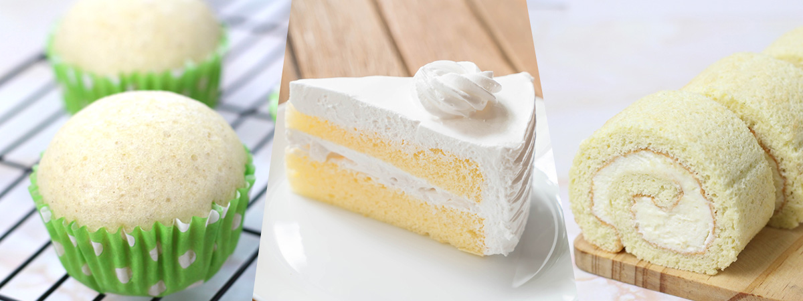

แบบฝึกหัด 2: Basic HTML
รหัสนักศึกษา 6440011008 นางสาวคีมมิรา เพ็ชรบุรี
Vanila Cake . . . เค้กวนิลลา

สูตรเค้กวนิลลา อร่อยเพลิน เติมความหวาน
Ingredient (ส่วนผสม)
- เนยจืด (อุณหภูมิห้อง) 1 ถ้วย
- น้ำตาลทรายป่น 1+1/2 ถ้วย
- ไข่ไก่ (อุณหภูมิห้อง) 4 ฟอง
- กลิ่นวานิลลา 1 ช้อนโต๊ะ
- แป้งเค้ก 2+3/4 ถ้วย
- ผงฟู 2+3/4 ช้อนชา
- เกลือ 1/2 ช้อนชา
- นมสดรสจืด 1 ถ้วย
- เนยจืด 1+1/2 ถ้วย
- น้ำตาลไอซิ่งร่อน 5+1/2 ถ้วย
- กลิ่นวานิลลา 1 ช้อนโต๊ะ
- เกลือ 1/4 ช้อนชา
- เฮฟวี่ครีม (อุณหภูมิห้อง) 6 ช้อนโต๊ะ
Cooking Method (วิธีทำ)
- เปิดเตาอบที่อุณหภูมิ 350 องศาฟาเรนไฮต์ และทาเนยขาวที่พิมพ์เค้กทรงกลมขนาดเส้นผ่าศูนย์กลาง 9 นิ้ว จำนวน 2 อัน ปูกระดาษรองอบที่ก้นพิมพ์ และโรยแป้งนวลกันติด
- ทำเค้กโดยใส่เนยกับน้ำตาลทรายลงอ่างผสม ตีจนขึ้นฟู ประมาณ 5 นาที ใส่ไข่ไก่ทีละฟองลงไปตีจนเข้ากัน เติมกลิ่นวานิลลาลงไป ตีจนเข้ากัน
- ร่อนแป้งเค้ก ผงฟู และเกลือ ลงไป ตีด้วยความเร็วปานกลางหรือต่ำจนเข้ากัน
- ตักส่วนผสมแบ่งลงไปในพิมพ์เค้กทั้ง 2 อัน นำไปอบประมาณ 20-30 นาทีหรือจนสุก พอครบเวลา 15 นาทีลองเช็กความสุก ถ้ายังไม่สุกเอาเข้าไปอบต่อจนครบเวลา สังเกตความสุกจากเอาไม้จิ้มฟันจิ้มลงไปแล้วไม่มีเนื้อแป้งติดขึ้นมา
- นำออกมาพักไว้ประมาณ 10 นาที เสร็จแล้วนำออกจากพิมพ์ พักไว้บนตะแกรงจนเย็น
- ทำครีมสดโดยตีเนยใช้ความเร็วปานกลางหรือสูง ประมาณ 5 นาที จนขึ้นฟู ใส่น้ำตาลไอซิ่งลงไป ตีด้วยความเร็วปานกลางหรือสูง ประมาณ 3-5 นาที ใส่กลิ่นวานิลลากับเกลือลงไป ตีด้วยความเร็วต่ำจนเข้ากัน ใส่เฮฟวี่ครีม 3 ช้อนโต๊ะลงไป ตีด้วยความเร็วปานกลางหรือสูง ประมาณ 3-5 นาที พอครบเวลา 2 นาที ใช้พายปาดส่วนผสมมารวมกัน ถ้ายังไม่ตั้งยอดก็ใส่เฮฟวี่ครีมเพิ่มไปทีละ 1/2 ช้อนโต๊ะ
- ประกอบร่างเค้กโดยนำเค้กชิ้นแรกปาดครีมลงไป ประกบด้วยเค้กชิ้นที่สองแล้วปาดครีมลงไป เกลี่ยหน้าให้สวยงามพร้อมเสิร์ฟ
Nutrition Facts
| Nutrition Facts |
|
Serving : 4 |
|
| Amount per serving |
| Calories |
101 |
| |
% Daily Vale |
| Total Fat 3.6g |
5% |
| Saturated Fat 0.5g |
3% |